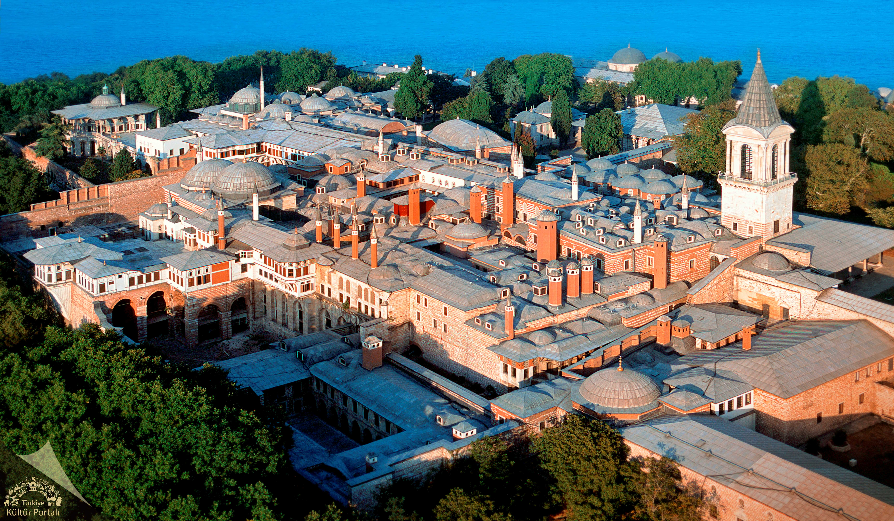

İstanbul’da gezilecek yerler listesinin ilk sırasına koyabileceğimiz çok sayıda yer var ve seçim yapmak çok zor ama Ayasofya da ilk sıralarda olmayı hak ediyor. Doğu Roma İmparatoru Konstantios’un 360 yılında inşa ettirdiği Ayasofya, dünyanın en eski katedrallerinden biri.
O dönemlerde Megale Ekklesia adıyla anıldığı bilinen Ayasofya, günümüzdeki görünümüne en yakın halini İmparator Justinianos’un görevlendirdiği Trallesli Anthemios ve Miletoslu İsidoros’un çalışmaları sonunda kazanmış. İki mimarın çalışmalarıyla 5 yıl 10 ayda yapımı tamamlanan Ayasofya, o zamanın diğer yapılarına kıyasla dünyanın en kısa sürede inşa edilen katedrali olmuş.
5. yüzyılda yapıya Hagia Sophia adı verilmiş ve 1453’te İstanbul fethedilene kadar bu adı taşımış. Fatih Sultan Mehmet, İstanbul’u aldıktan sonra Ayasofya’nın cami olmasını emretmiş ve yapının minareleri Mimar Sinan tarafından inşa edilmiş. 1935 yılında müze olan Ayasofya, 2020 yılında ise tekrar ibadete açıldı.
Konum Linki 2- Topkapı Sarayı Müzesi
İstanbul’un en turistik bölgesi olan Tarihi Yarımada’da bulunan Topkapı Sarayı, İstanbul’da gezilecek yerler listesinin ilk sıralarında olmalı elbette. Fatih semtine bağlı Sarayburnu’nda bulunan Topkapı Sarayı, İstanbul fethedildikten sonra inşa edilmiş ve 400 yıl süreyle Osmanlı İmparatorluğu’nun idare merkezi olarak hizmet vermiş.
Osmanlı Dönemi’nin ihtişamlı tarihine tanıklık eden sarayda entrikalar ve hüzünlü zamanlar da yaşanmış. 3 Nisan 1924’te müze haline getirilen Topkapı Sarayı, aynı zamanda Türkiye Cumhuriyeti’nin ilk müzesi. 300.000 metrekarelik bir alanı kapladığı ve yaklaşık 300.000 tane arşiv belgesine ev sahipliği yaptığı için dünyada bulunan saray müzelerinin en büyüklerinden biri.
Müzeyi gezmeye gittiğinde Harem bölümü, Hırka-ı Saadet Dairesi, Has Oda, Babü’s Saade ve Köşkler Bahçesi’ni görebilirsin. Ayrıca padişahların portrelerine, kıyafetlerine ve silahlarına ev sahipliği yapan İstanbul Kitaplığı’nı da mutlaka ziyaret etmelisin. Sarayı Salı günleri dışında hafta için 10:00 ile 17:30, hafta sonu ise 10:30 ile 17:30 arasında gezebilirsin.
Konum Linki 3- Yerebatan Sarnıcı
3- Yerebatan Sarnıcı
Bizans İmparatorluğu döneminden İstanbul’da kalan en değerli yapılardan Yerebatan Sarnıcı. 532 yılında İmparator Justinianus’un emri üzerine inşa edilen sarnıç, o yıllarda sarayın ve halkın su ihtiyacı için kullanılırmış. Hatta İstanbul’un fethinden sonra da bir süre boyunca su kaynağı olarak kullanımı devam etmiş.
Geçmişte sarnıç üzerinde Stoa Bazilikası bulunduğu için Bazilika Sarnıcı ve suyun içinden çıkan sütunlar yüzünden Yerebatan Sarayı olarak da bilinirmiş. 140 metre uzunlukta ve 70 metre genişlikte olan Yerebatan Sarnıcı’ndaki en gizemli eser ise Medusa Başı. Sarnıcın kuzeybatısındaki konumlanan iki sütunun altında bulunan heykel, Roma Dönemi’nin en önemli eserlerinden biri ama buraya nasıl geldiği bilinmiyor.
Yerebatan Sarnıcı, turistik güzelliğinin yanında kültürel anlamda da önemli bir yer. Burada yerli ve yabancı sanatçıların konserleri ve resitalleri düzenleniyor. Özellikle bu konserler esnasında yapılan ışıklandırma düzenlemeleri ile etkinlikler çok etkileyici hale geliyor.
Konum Linki